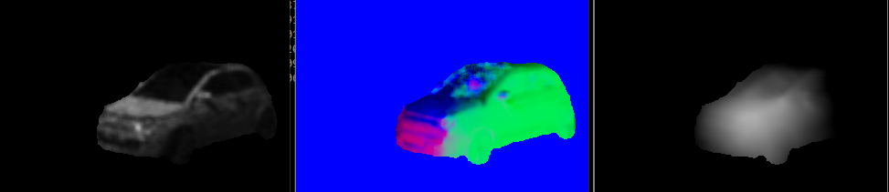

photometric stereo
i stumbled about a nice idea and a github repo ..
this is an easy setup to acquire decent depth / 3d (half)models for small, real world objects,
using a dark room, a shining sphere and a pointlight src(e.g. a pocketlight).
it's a bit limited (to small objects, indoor), but you do not need a stereo camera for this.
below are the image, the normals, and the depth map:

set them up next to each other, make an image, and split it into halves, for ~20 varying light positions
(look at the holes in the car's front window - i clearly forgot to sample some light directions !)
the algorithm will try to reconstruct normals and depth from the sampled sphere reflection on the left for the image on the right.

there is a maximum intensity point in each sphere image, we can cast a ray from there to the camera.
the inverted matrix of those light direction vectors will be used to transform the intensities at that pixel in lightspace for the normals computation:
`x/z` and `y/z` from the normal form separate gradient fields.
once, whe have the gradients, we can setup the depth map: